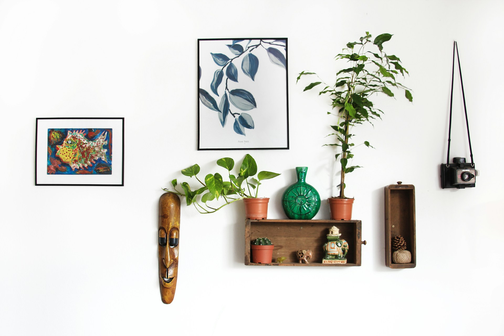
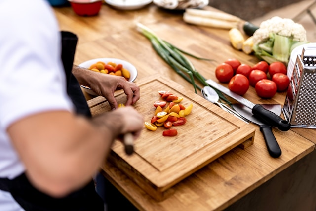
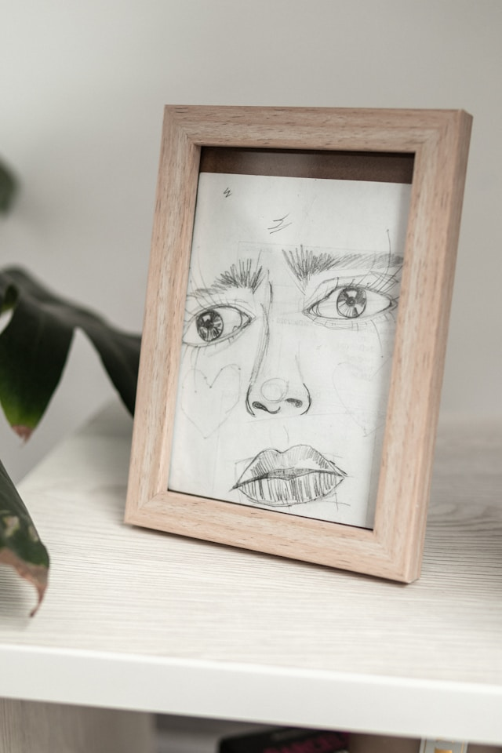

July 23, 2025
Finding simplicity in life
In a world constantly pushing for more—more work, more stuff, more
noise—choosing simplicity can feel revolutionary. But simplicity
isn’t about having less just for the sake of it. It's about making
space for what truly matters: meaningful relationships, restful
moments, and intentional living. By decluttering both our homes and
our minds, we invite clarity, peace, and balance into our daily
lives.
Continue reading
Keeping cooking simple
Cooking doesn’t need to be complicated to be nourishing. A few
fresh ingredients, a simple recipe, and time shared with loved
ones can turn any meal into something special. Learn how
simplifying your kitchen setup and embracing easy-to-make meals
can make cooking more enjoyable and less stressful.
CONTINUE READING

July 23,2025 | 3 comments
Simplicity and work
Simplifying your work life starts with setting boundaries and
focusing on priorities. Whether you’re working from home or in an
office, minimizing distractions and organizing your tasks can
drastically improve your productivity and reduce stress. Learn how
to integrate minimalist principles into your daily workflow.
CONTINUE READING

July 23,2025 | 3 comments
Simple decoration
A minimalist home doesn't have to feel empty. With a few
intentional design choices—neutral tones, natural light, and
meaningful decor—you can create a space that feels both calming
and personal. Discover tips for transforming your home into a
peaceful, clutter-free sanctuary.
CONTINUE READING

July 23,2025 | 3 comments